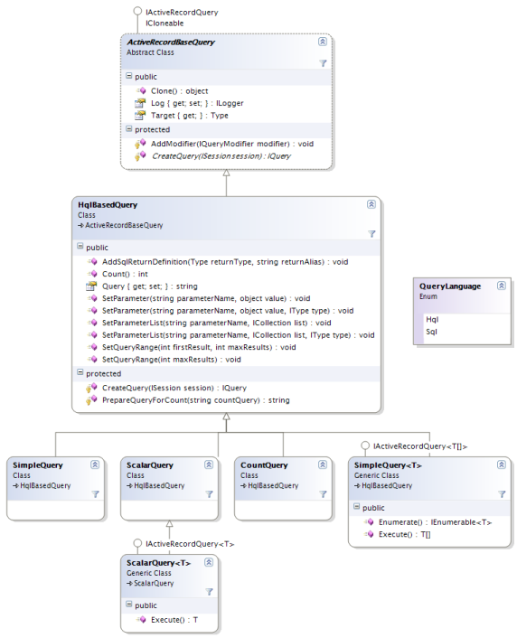

Table of contents
Using HQL (Hibernate Query language)
As NHibernate is database agnostic, a custom query language is used to query NHibernate entities. The query is translated to the underlying database and then executed.
Teaching HQL is out of the scope of this article. You should consult the NHibernate documentation on HQL.
There are at least three different ways to run a HQL query using ActiveRecord. 
SimpleQuery and ScalarQuery
SimpleQuery and ScalarQuery can be used in cases where the query would be a direct HQL query call.
Here are some examples:
[ActiveRecord] public class Blog : ActiveRecordBase<Blog> { ... // Static method from Blog class, retrieves all Post instances // from the blog of the specified author. Uses positional parameters. public static Post[] GetPostsFromAuthor( String author ) { SimpleQuery<Post> q = new SimpleQuery<Post>(@" from Post p where p.Blog.Author = ? ", author); return q.Execute(); } // Static method from Blog class, retrieves the ID of all Post instances // in a specified date interval. Uses named parameters. public static int[] GetPostIdsFromInterval( DateTime start, DateTime end ) { // the second type parameter specifies the type of the query result SimpleQuery<int> q = new SimpleQuery<int>(typeof(Post), @" select p.ID from Post p where p.Date between :start and :end "); q.SetParameter("start", start); q.SetParameter("end", end); return q.Execute(); } // Instance method from Blog, gets the last post date. public DateTime LastPostDate() { ScalarQuery<DateTime> q = new ScalarQuery<DateTime>(typeof(Post), @" select max(p.Date) from Post p where p.Blog = ? ", this); return q.Execute(); } }
[ActiveRecord] public class Blog : ActiveRecordBase { ... // Static method from Blog class, retrieves all Post instances // from the blog of the specified author. Uses positional parameters. public static Post[] GetPostsFromAuthor( String author ) { SimpleQuery q = new SimpleQuery(typeof(Post), @" from Post p where p.Blog.Author = ? ", author); return (Post[]) ExecuteQuery(q); } // Static method from Blog class, retrieves the ID of all Post instances // in a specified date interval. Uses named parameters. public static int[] GetPostIdsFromInterval( DateTime start, DateTime end ) { // the second type parameter specifies the type of the query result SimpleQuery q = new SimpleQuery(typeof(Post), typeof(int), @" select p.ID from Post p where p.Date between :start and :end "); q.SetParameter("start", start); q.SetParameter("end", end); return (int[]) ExecuteQuery(q); } // Instance method from Blog, gets the last post date. public DateTime LastPostDate() { ScalarQuery q = new ScalarQuery(typeof(Post), @" select max(p.Date) from Post p where p.Blog = ? ", this); return (DateTime) ExecuteQuery(q); } }
Custom Query
If your want:
- encapsulation of your business rules within a query object;
- custom, advanced parameter handling;
- conditional queries (i.e., building the HQL and parameters manually);
- direct use of NHibernate's
Criteria; or - direct access to NHibernate's
ISessionorIQueryobjects
Then you can write a custom ActiveRecord query.
You just need to inherit from ActiveRecordBaseQuery (or implement the IActiveRecordQuery interface).
For example:
public class MyCustomQuery : ActiveRecordBaseQuery { private String authorName = null; private int maxResults = 2; public MyCustomQuery() : base(typeof(Blog)) { } public MyCustomQuery(string authorName) : base(typeof(Blog)) { this.AuthorName = authorName; } public int MaxResults { get { return this.maxResults; } set { this.maxResults = value; } } public String AuthorName { get { return this.authorName; } set { this.authorName = value; } } protected override void CreateQuery(ISession session) { String hql = "from Blog b"; if (this.AuthorName != null) hql += " where b.Author like :author"; IQuery q = session.CreateQuery(hql); if (AuthorName != null) q.SetString("authorName", this.AuthorName); q.SetMaxResults(this.MaxResults); return q; } protected override object InternalExecute(ISession session) { IQuery q = CreateQuery(session); return SupportingUtils.BuildArray(typeof(Blog), q.List(), null, false); } }
The usage:
[ActiveRecord] public class Blog : ActiveRecordBase { ... public Blog[] GetThreeBlogsFromAuthor( String authorName ) { QueryWithNamedParameters q = new QueryWithNamedParameters(); q.AuthorName = authorName; q.MaxResults = 3; return (Blog[]) ExecuteQuery(q); } }
Execute Callback
The third way to write custom queries is to use the ActiveRecordBase.Execute method, which basically does the same as the Custom Query approach, but without the need to write any additional classes.
[ActiveRecord] public class Blog : ActiveRecordBase<Blog> { ... public static Post[] GetPostsFromAuthor( String author ) { return (Post[]) Execute( delegate(ISession session, object instance) { // create the query... IQuery query = session.CreateQuery( "from Post p where p.Blog.Author = :author" ); // set the parameters... query.SetString("author", (String) instance); // fetch the results... IList results = query.List(); // OPTIONAL: convert the results to an array or // something meaningful, instead of returning the IList Post[] posts = new Post[results.Count]; results.CopyTo(posts, 0); // return return posts; }, author); } }
[ActiveRecord] public class Blog : ActiveRecordBase { ... public static Post[] GetPostsFromAuthor( String author ) { return (Post[]) Execute( new NHibernateDelegate(GetPostsFromAuthorCallback), author ); } private object GetPostsFromAuthorCallback( ISession session, object instance ) { // create the query... IQuery query = session.CreateQuery( "from Post p where p.Blog.Author = :author" ); // set the parameters... query.SetString("author", (String) instance); // fetch the results... IList results = query.List(); // OPTIONAL: convert the results to an array or // something meaningful, instead of returning the IList Post[] posts = new Post[results.Count]; results.CopyTo(posts, 0); // return return posts; } }
Generated by Castle Anakia.
Sponsored by  Castle Stronghold.
Castle Stronghold.